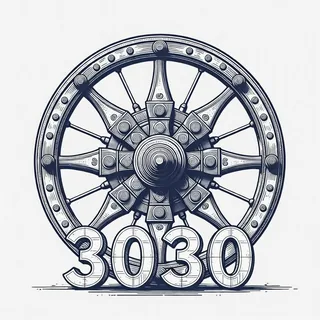

3thousand30
build for 3030 — not for next quarter
Too many companies make users dependent, confused, tracked, and locked into subscriptions. We reject that model.
3thousand30 builds affordable, privacy-first, buy-once tools — and uses them in real workflows and artifacts — helping ordinary people become more capable, creative, and independent.
Browse the full stack or jump by app if you already know the workflow you want. view all products →

Batch Generate Text with any AI
Bulk AI writing with BYO keys, reusable personas, sample analysis, CSV topic generation, and local saved outputs.

BatchGen Image with AI
Bulk AI image generation. BYOKey — you choose the provider and pay them directly. Your files stay on your machine.

Batch Translate with AI
Batch-translate PDF, DOCX, TXT, and Markdown files with your own AI key. Choose providers, target languages, and save every output to your PC.

BatchEnhance Image
Upscale and prepare image batches for high-quality print. Fully local. No cloud, no account, no telemetry. Nothing leaves your machine.

BatchFile Organiser
Bulk file organisation for Windows. Sort, rename, and arrange files in batches — fully local, no cloud, no account required.

BatchWatermark Image
Add text and logo watermarks to full image folders. Preview result, tune placement and opacity — fully local, no cloud, no account required.

BatchCompress Image
Compress full image folders locally. Set quality, compare before and after, and export in one run — no cloud, no account, no subscription.

BatchResize Image
Resize full image folders for social, web, email, and marketplace workflows. Use presets, crop controls, and preview — fully local.
Practical workflow pages built from real output, real costs, and the kind of review loop that keeps batch AI work from turning into slop. browse the use-case library →
How To Create A Photobook With AI For Gifting
Generate a themed image batch, reject hard, enhance for print, assemble the book, then publish, gift, or sell the final artifact.
How To Mass Create Social Media Content With AI
Create posts, threads, images, resized exports, and proof-marked variants in one repeatable workflow for creators and ecommerce sellers.
devyo Life
AI-guided personal growth and productivity platform. Develop your knowledge, habits, and judgment — on your own terms. Not just another productivity app: a life operating system built around the people using it.
visit devyo.life →coming_soon.exe
The cartridge bay is warming up. We are still tuning the controls, balancing the weirdness, and making sure the first Windows game feels worth the wait instead of merely shipped.
No fake release date yet. Just a blinking cursor, a live wire, and a promise that this section will wake up properly when the first build is ready.
Open source X / Twitter automation tools. Free, customizable, no paywalls.
Thread AI Automation
Automate X thread creation with AI. Fully customizable and free to run.
view on GitHub →Twitter AI Agent
A simple X AI agent that works and is highly customizable. Free and open source.
view on GitHub →Repost AI Agent
Automate smart X reposting with AI. Highly customizable and free to run.
view on GitHub →